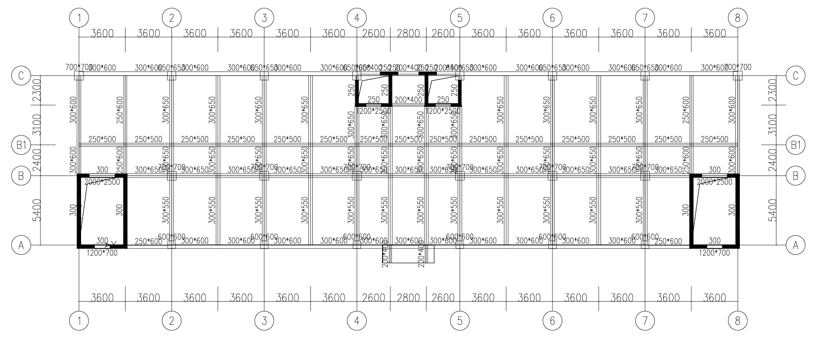
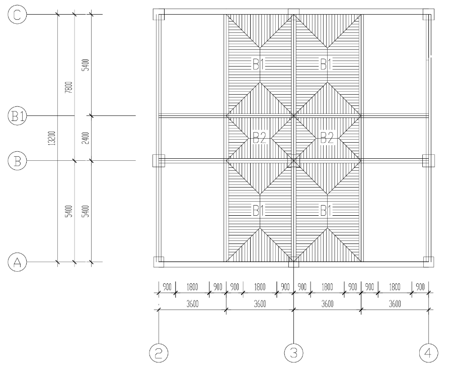

Building design / Academic project
Tianjin University / Dec 2024 - Jun 2025From load paths to reinforcement details.
Structural design of a 10-storey reinforced-concrete office building
I developed the structural layout and load paths from architectural drawings, selecting an RC moment-frame system. The project connected whole-building analysis with the design of individual members and connections.
My contribution
I cross-checked hand-calculated frame designs against PKPM results and used SATWE for full-building 3D analysis. I designed beam and column reinforcement at governing sections to GB 50010, including serviceability checks and reinforcement detailing.
I also checked the seismic detailing of beam-column joint core regions against ductility requirements.
Design workflow
Establish the structural system
Translate architectural drawings into an RC frame layout and identify the load paths.
Cross-check the analysis
Compare hand calculations with PKPM and assess global behaviour in SATWE.
Design and detail the members
Size reinforcement at governing sections and check serviceability and joint detailing.
- Structure
- 10-storey RC frame
- Analysis tools
- PKPM / SATWE
- RC design code
- GB 50010
{kind=link}

{kind=link}

{kind=link}
{kind=link}
{kind=link}
{kind=link}
{kind=link}
{kind=link}
{kind=link}
{kind=link}
{kind=link}
{kind=link}